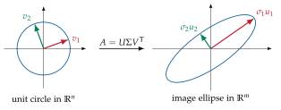
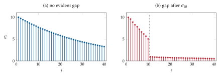
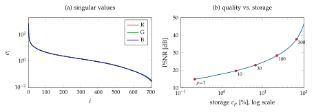
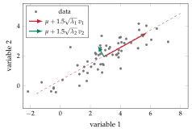

Chapter 3The singular value decomposition
The singular value decomposition (SVD) is the most important advanced tool of linear algebra used in this course: it provides the rank of a matrix in a numerically reliable way, orthonormal bases of the four fundamental subspaces, the pseudo-inverse used in least squares (Chapter 4), the best low-rank approximation of a matrix. It is the core computation of the Ho–Kalman and MOESP algorithms (Chapters 7 and 8), and a cornestore in many other data-driven problems from applied mathematics and engineering.
3.1 Definition
Theorem 3.1 (Singular value decomposition). Every matrix \(A\in\R^{m\times n}\) can be factorized as
where
\(U=[u_1\;u_2\;\cdots\;u_m]\) is the orthogonal matrix (\(U\T U=I_m\)) of the left singular vectors of \(A\);
\(V=[v_1\;v_2\;\cdots\;v_n]\) is the orthogonal matrix (\(V\T V=I_n\)) of the right singular vectors of \(A\);
\(\Sigma\) is the matrix of the singular values of \(A\), non-negative numbers ordered as \(\sigma_1\ge\sigma_2\ge\cdots\ge\sigma_{\min(m,n)}\ge0\), with structure
\[ \Sigma=\bmat{\diag(\sigma_1,\dots,\sigma_n)\\ 0_{(m-n)\times n}}\ \ (m\ge n), \qquad \Sigma=\bmat{\diag(\sigma_1,\dots,\sigma_m) & 0_{m\times(n-m)}}\ \ (n\ge m). \]
If \(\rank(A)=r\), then \(\sigma_1\ge\cdots\ge\sigma_r>0=\sigma_{r+1}=\cdots=\sigma_{\min(m,n)}\): the rank is the number of non-zero singular values.
For \(A=\bmat{1&0\\0&1\\0&0}\) (\(3\times2\), \(\min(m,n)=2\)) we have \(A=U\Sigma V\T\) with \(U=I_3\), \(V=I_2\) and \(\Sigma=\bmat{1&0\\0&1\\0&0}\): \(\sigma_1=\sigma_2=1\), \(\rank A=2\). For \(A=\bmat{1&0\\0&0\\0&0}\) we get again \(U=I_3\), \(V=I_2\) and \(\Sigma=A\): \(\sigma_1=1=\sigma_r\) with \(r=1\), and \(\sigma_{r+1}=\sigma_{\min(m,n)}=\sigma_2=0\).
3.2 Where the SVD comes from
The SVD is closely related to the eigendecomposition of the symmetric positive semidefinite matrices \(A\T A\) and \(AA\T\) (Theorem 2.10). Using \(U\T U=I_m\),
which is exactly of the form \(R\Lambda R\T\) with \(R=V\) orthogonal. Hence the right singular vectors \(V=[v_1\;\cdots\;v_n]\) are eigenvectors of \(A\T A\) and
that is, the singular values \(\sigma_i\) are the square roots of the eigenvalues of \(A\T A\).
Similarly, using \(V\T V=I_n\),
so the left singular vectors \(U=[u_1\;\cdots\;u_m]\) are eigenvectors of \(AA\T\), and the matrix
contains the eigenvalues of \(AA\T\).
Summary. \(A=U\Sigma V\T=\sum_{i=1}^{\min(m,n)}\sigma_iu_iv_i\T\), where
\(U\) collects the left singular vectors of \(A\), i.e. orthonormal eigenvectors of \(AA\T\);
\(V\) collects the right singular vectors of \(A\), i.e. orthonormal eigenvectors of \(A\T A\);
\(\Sigma\) contains in its diagonal block the square roots of the non-zero eigenvalues of either \(AA\T\) or \(A\T A\) (they are the same), padded with zeros, ordered decreasingly;
from \(A=U\Sigma V\T\) one has \(AV=U\Sigma\), i.e. \(Av_i=\sigma_iu_i\) for \(i\le\min(m,n)\);
from \(A\T=V\Sigma\T U\T\) one has \(A\T U=V\Sigma\T\), i.e. \(A\T u_i=\sigma_iv_i\) for \(i\le\min(m,n)\).
In MATLAB: [U,S,V] = svd(A); svd(A) returns only the singular values.
The last relations suggest how to construct the SVD: compute an orthonormal eigenbasis \(v_1,\dots,v_n\) of \(A\T A\) with eigenvalues \(\sigma_1^2\ge\cdots\ge\sigma_n^2\), set \(u_i=Av_i/\sigma_i\) for \(\sigma_i>0\) (these are orthonormal, since \(u_i\T u_j=v_i\T A\T Av_j/(\sigma_i\sigma_j)=\delta_{ij}\)), and complete \(\{u_i\}\) to an orthonormal basis of \(\R^m\). This also proves Theorem 3.1. (Numerical libraries do not form \(A\T A\), which would square the condition number, but work directly on \(A\) [4].)
Let \(A=\bmat{3&2&2\\2&3&-2}\). Then \(AA\T=\bmat{17&8\\8&17}\), with eigenvalues \(25\) and \(9\) and eigenvectors \(u_1=\tfrac1{\sqrt2}(1,1)\T\), \(u_2=\tfrac1{\sqrt2}(1,-1)\T\); hence \(\sigma_1=5\), \(\sigma_2=3\). The right singular vectors are
where \(v_3\) completes the orthonormal basis of \(\R^3\) (it spans \(\Ker(A)\)). Therefore
For the symmetric matrix of Example 2.1, \(A=\bmat{1&0&1\\0&1&1\\1&1&2}\succeq0\), the SVD coincides with the spectral decomposition: \(\sigma=(3,1,0)\), \(u_1=v_1=\tfrac1{\sqrt6}(1,1,2)\T\), \(u_2=v_2=\tfrac1{\sqrt2}(1,-1,0)\T\) and \(u_3=v_3=\tfrac1{\sqrt3}(-1,-1,1)\T\), which spans the kernel found in Example 2.1.
Geometric interpretation. Since \(Av_i=\sigma_iu_i\), the matrix \(A\) maps the orthonormal basis \(\{v_i\}\) of \(\R^n\) onto the orthogonal vectors \(\{\sigma_iu_i\}\) of \(\R^m\): the unit sphere is mapped onto an (possibly degenerate) ellipsoid whose semi-axes have directions \(u_i\) and lengths \(\sigma_i\) (Figure 3.1). In the factorization \(A=U\Sigma V\T\) the map is decomposed into a rotation/reflection (\(V\T\)), an axis scaling (\(\Sigma\)) and another rotation/reflection (\(U\)).

3.3 The SVD and the four fundamental subspaces
Let now \(\rank(A)=r\le\min(m,n)\). In this case we know that \(\sigma_{r+1}=\cdots=\sigma_{min(m,n)}=0\) so that we can partition the SVD conformably:
with \(U_r=[u_1\cdots u_r]\) (\(m\times r\)), \(\bar U_r=[u_{r+1}\cdots u_m]\) (\(m\times(m-r)\)), \(V_r=[v_1\cdots v_r]\) (\(n\times r\)), \(\bar V_r=[v_{r+1}\cdots v_n]\) (\(n\times(n-r)\)) and \(\Sigma_r=\diag(\sigma_1,\dots,\sigma_r)\) nonsingular. The factorization \(A=U_r\Sigma_rV_r\T\) is the compact (or reduced) SVD. An alternative notation is \(\bar U_r=U_r^\perp\), \(\bar V_r=V_r^\perp\) that highlights the fact that the columns in \(U_r^\perp\) are orthogonal to those of \(U_r\) and the same holds for the columns in \(V_r^\perp\) with respect to those in \(V_r\).
Multiplying \(A=U\Sigma V\T\) on the right by \(V\) gives \(AV=U\Sigma\), i.e.
From (I), every \(u_i\), \(i\le r\), belongs to \(\Im(A)\); since they are \(r=\dim\Im(A)\) independent vectors, \(\Im(A)=\spn\{u_1,\dots,u_r\}=\Im(U_r)\). From (II) and \(\dim\Ker(A)=n-r\), \(\Ker(A)=\spn\{v_{r+1},\dots,v_n\}=\Im(\bar V_r)\). Transposing, \(A\T=V\Sigma\T U\T\) and \(A\T U=V\Sigma\T\), i.e.
which give \(\Im(A\T)=\spn\{v_1,\dots,v_r\}=\Im(V_r)\) and \(\Ker(A\T)=\spn\{u_{r+1},\dots,u_m\}=\Im(\bar U_r)\).
The SVD and the four fundamental subspaces of \(A\in\R^{m\times n}\), \(r=\rank(A)\):
| \(\Im(A)=\spn\{u_1,\dots,u_r\}=\Im(U_r)\) | \(\Im(A\T)=\spn\{v_1,\dots,v_r\}=\Im(V_r)\) |
| \(\Ker(A\T)=\spn\{u_{r+1},\dots,u_m\}=\Im(\bar U_r)\) | \(\Ker(A)=\spn\{v_{r+1},\dots,v_n\}=\Im(\bar V_r)\) |
The orthogonality relations of Theorem 2.5 are now evident: \(U_r\T\bar U_r=0\) and \(V_r\T\bar V_r=0\).
3.4 Numerical rank and inspection of the singular values
In exact arithmetic the rank is the number of non-zero singular values. With real data (measurement errors, rounding, approximations) a matrix is almost never exactly rank deficient: all its singular values are typically non-zero. The inspection of the singular values of a (large) matrix is nevertheless very useful to understand how much significant information is stored in it. Consider a \(100\times100\) matrix \(A\) containing “ugly” numbers and look at the plot of \(\sigma_1,\dots,\sigma_{100}\) (Figure 3.2):
if the singular values decay slowly, there is no clear evidence that some part of the data can be neglected with close-to-zero information loss;
if there is a clear gap, e.g. \(\sigma_{10}\gg\sigma_{11}\approx\sigma_{12}\approx\cdots\), there is evidence that the significant information is mainly stored in the first ten components of the SVD, and \(A\) is well approximated by
\[ A_{10}=\bmat{u_1&\cdots&u_{10}}\diag(\sigma_1,\dots,\sigma_{10}) \bmat{v_1&\cdots&v_{10}}\T=\sum_{i=1}^{10}\sigma_iu_iv_i\T . \]
The numerical rank (or \(\varepsilon\)-rank) is the number of singular values larger
than a threshold \(\varepsilon\) chosen according to the noise level; MATLAB’s rank
uses \(\varepsilon=\max(m,n)\,\mathrm{eps}(\sigma_1)\), which is appropriate for rounding
errors only. This idea, choosing an order by looking for a gap in the singular values,
will be used to determine the order of a system in Chapters 7 and 8.

experiments.py).3.5 Matrix norms and low-rank approximation
The SVD gives simple expressions of the two matrix norms introduced in Chapter 2:
(the Frobenius norm is invariant under orthogonal transformations; indeed, since the trace is invariant under similarity, \(\tr(A\T A)\) equals \(\tr(V\Sigma\T\Sigma V\T)=\sum\sigma_i^2\)). The low-rank approximation problem consists in approximating a given matrix with a matrix of lower rank.
Theorem 3.2 (Eckart–Young–Mirsky). Let \(A\in\R^{m\times n}\) have SVD (3.1) and let \(p<\rank(A)\). The “closest” matrix of rank \(p\) to \(A\), both in the \(2\)-norm and in the Frobenius norm, is the truncated SVD
and the approximation errors are
For example, for \(A\in\R^{100\times80}\) the best rank-3 approximation in \(\norm{\cdot}_{2}\) and \(\norm{\cdot}_F\) is simply the truncation
For the matrix of Figure 3.2(b), the rank-10 truncation has \(\norm{A-\hat A_{10}}_2=\sigma_{11}=0.962\) and a relative Frobenius error of \(18\%\), entirely due to the noise floor. Note that storing \(\hat A_p\) requires \(p(m+n+1)\) numbers instead of \(mn\): this is the principle of SVD-based data compression (Section 3.6).
Condition number. For a square nonsingular \(A\) (or a tall \(A\) with independent columns) the (2-norm) condition number is \(\kappa(A)=\sigma_1/\sigma_{\min}\). It measures the sensitivity of the solution of \(Ax=y\) to perturbations: a relative error \(\norm{\delta y}/\norm{y}\) can be amplified up to \(\kappa(A)\) times. Since \(\kappa(A\T A)=\kappa(A)^2\), forming \(A\T A\) explicitly should be avoided when \(A\) is ill conditioned (Section 4.11).
3.6 An application: image compression
A digital colour image of \(m\times n\) pixels is stored as three \(m\times n\) matrices \(A_R,A_G,A_B\), the red, green and blue channels, whose entries are the intensities of the pixels (integers \(0,\dots,255\) for 8-bit images, here divided by \(255\) so that they lie in \([0,1]\)); a grey-scale image is a single matrix. The matrices of natural images have full rank, but their singular values decrease quickly, so that a few singular triplets carry most of the information. By Theorem 3.2, the truncated SVD of each channel
is the best approximation of rank \(p\), and it is described by the \(p\) triplets \((\sigma_i,u_i,v_i)\), i.e. by \(p(m+n+1)\) numbers instead of \(mn\).
Storage. The fraction of numbers to be stored and the compression ratio are
The representation is convenient only if \(c_p<1\), i.e. \(p<\bar p=mn/(m+n+1)\), which is slightly less than \(\min(m,n)/2\) for a square image and approaches \(\min(m,n)\) for a very elongated one: beyond \(\bar p\) the factors require more numbers than the image itself.
Quality. The degradation is measured by comparing \(A\) (the three channels together) with its approximation \(\hat A_p\) (the three truncated channels). Two common measures are the relative Frobenius error and the peak signal-to-noise ratio
where \(1\) at the numerator of the PSNR is the peak value of the intensities. By Theorem 3.2 both follow from the singular values alone, \(\norm{A-\hat A_p}_F^2=\sum_{c\in\{R,G,B\}}\sum_{i>p}\sigma_{c,i}^2\), without forming \(\hat A_p\). As a rule of thumb, a PSNR above \(30\) dB corresponds to an acceptable quality, and above \(40\) dB the differences are hardly visible. (Since the entries of \(A\) lie in \([0,1]\), clipping \(\hat A_p\) to \([0,1]\) before displaying it can only reduce the error.)
What a rank-one term looks like. Each term \(\sigma_iu_iv_i\T\) is a rank-one image: all its rows are multiples of \(v_i\T\) and all its columns are multiples of \(u_i\). It is therefore a separable pattern of horizontal and vertical stripes, the product of a vertical profile (\(u_i\)) and a horizontal one (\(v_i\)). Structures aligned with the rows and the columns of the image are thus reproduced by few terms, while oblique lines, curved contours and fine textures need many of them.
The photograph of Figure 3.3(a), a trabocco (a traditional fishing platform of the Abruzzo coast), has \(m=705\) rows and \(n=1280\) columns, so that \(mn=902\,400\) numbers per channel and \(\bar p=454.4\). Figure 3.4(a) shows the singular values of the three channels. The first one is much larger than the others (\(\sigma_1\approx 490\)–\(650\), \(\sigma_2\approx 80\)–\(95\)): since all the entries are positive, \(\sigma_1u_1v_1\T\) essentially reproduces the average brightness. After that the singular values decay slowly and without any gap (\(\sigma_{11}\approx 23\), \(\sigma_{101}\approx 4\), \(\sigma_{301}\approx 1.3\), \(\sigma_{705}\approx 0.025\)): unlike the matrix of Figure 3.2(b), there is no “true” rank, and the choice of \(p\) is a trade-off between storage and quality, summarized in Table 3.1 and Figure 3.4(b).
The rank-one approximation, Figure 3.3(b), is a plaid of horizontal and vertical stripes in which the horizon and the poles are already visible. With \(p=10\) the poles, the horizontal beams and the horizon are sharp, while the clouds and the walkway are shapeless; with \(p=30\) the scene is recognizable, but the ropes, which are oblique, are still missing; with \(p=100\) the ropes and the seagulls appear and the residual error looks like a fine noise, most visible in the sky; with \(p=300\) the image is hard to distinguish from the original. Note that the fraction of energy \(\sum_{i\le p}\sigma_i^2/\sum_i\sigma_i^2\) is a poor indicator of quality here: it is already \(91.5\%\) for \(p=1\), precisely because of the dominant first singular value. A PSNR of \(30\) dB requires \(p=133\) (\(c_p=29\%\), ratio \(3.4\)), and \(40\) dB requires \(p=346\) (\(c_p=76\%\)).
| \(p\) | numbers per channel | \(c_p\) | ratio \(1/c_p\) | energy | \(e_p\) | PSNR [dB] |
|---|---|---|---|---|---|---|
| 1 | 1 986 | 0.2% | 454.4 | 91.54% | 29.08% | 14.8 |
| 10 | 19 860 | 2.2% | 45.4 | 97.21% | 16.71% | 19.6 |
| 30 | 59 580 | 6.6% | 15.1 | 98.69% | 11.45% | 22.9 |
| 100 | 198 600 | 22.0% | 4.5 | 99.62% | 6.14% | 28.3 |
| 300 | 595 800 | 66.0% | 1.5 | 99.96% | 2.08% | 37.7 |
| original | 902 400 | 100% | 1 | 100% | 0 | \(\infty\) |

Remark 3.3 (SVD compression in practice). This application is meant as an illustration of Theorem 3.2, not as a practical compression method, and it is not how common image formats work. JPEG, for instance, splits the image into \(8\times8\) blocks, represents each block through the discrete cosine transform and quantizes the coefficients according to the sensitivity of the human eye: the photograph of Figure 3.3(a) is a JPEG file about \(12\) times smaller than its raw pixels, with no visible degradation. Note also that the SVD saves memory only if the factors are stored, and that their entries are real numbers rather than 8-bit integers.
3.7 Principal component analysis
Principal component analysis (PCA) is the statistical twin of the low-rank approximation and is the most common SVD-based tool of data analysis [16]. Let \(X\in\R^{N\times d}\) collect \(N\) observations (rows) of \(d\) variables (columns), e.g. \(d\) sensor signals sampled \(N\) times. Define the sample mean \(\mu=\frac1N\sum_{k}x_k\) (a row vector) and the centred data matrix \(X_c=X-\mathbf 1\mu\). The sample covariance matrix is
PCA looks for the orthonormal directions \(w_1,w_2,\dots\) along which the projected data have maximum variance: \(w_1=\argmax_{\norm{w}=1}w\T Sw\), then \(w_2\) maximizes the same quantity among directions orthogonal to \(w_1\), and so on. By Theorem 2.10 the solution is given by the eigenvectors of \(S\), and by (3.2) these are the right singular vectors of \(X_c\):
If \(X_c=U\Sigma V\T\) is the (thin) SVD of the centred data, then
the principal directions are the columns \(v_1,\dots,v_d\) of \(V\);
the variance along \(v_i\) is \(\lambda_i=\sigma_i^2/(N-1)\), and \(\lambda_i/\sum_j\lambda_j\) is the fraction of explained variance;
the principal components (scores) are the columns of \(X_cV=U\Sigma\);
keeping the first \(p\) components gives \(X\approx\mathbf 1\mu+X_cV_pV_p\T\), which is the best rank-\(p\) approximation of \(X_c\) (Theorem 3.2).
Sixty points were generated by stretching a standard Gaussian cloud by factors \(2\) and \(0.5\), rotating it by \(30^\circ\) and translating it (Figure 3.5). PCA gives \(\mu=(2.90,1.94)\), principal directions \(v_1=(0.873,0.487)\T\) (close to the true direction \((\cos30^\circ,\sin30^\circ)=(0.866,0.5)\)) and \(v_2=(-0.487,0.873)\T\), variances \(\lambda_1=4.73\), \(\lambda_2=0.30\). The first component explains \(94\%\) of the variance: the data are essentially one-dimensional, and replacing each point by its projection on the line \(\mu+\alpha v_1\) loses only \(6\%\) of the variance.

Remark 3.4. (i) Centring is essential: without it the first singular vector points towards the mean. (ii) If the variables have different units, they should also be scaled (e.g. to unit variance), otherwise PCA is dominated by the variable with the largest numbers. (iii) PCA minimizes the sum of squared orthogonal distances of the points from the approximating subspace; ordinary least squares (Chapter 4) minimizes vertical distances. The two coincide only in special cases; the link is total least squares (Section 4.9).
3.8 Exercises
Exercise 3.1. Compute by hand the SVD of \(A=\bmat{1&1\\0&1\\1&0}\) and of \(A\T\). How are the two related?
Exercise 3.2. Prove that \(\norm{A}_2=\sigma_1\) using the SVD and the fact that orthogonal matrices preserve the Euclidean norm.
Exercise 3.3. Show that for a symmetric matrix the singular values are the absolute values of the eigenvalues. When do the singular vectors coincide with the eigenvectors?
Exercise 3.4 (Image compression). Repeat the experiment of Section 3.6 on a photograph of your choice. (a) Convert it to grey scale, \(Y=0.299A_R+0.587A_G+0.114A_B\), and find the smallest \(p\) giving a PSNR of \(30\) dB; compare it with the colour case. (b) Represent the colour image by its luminance \(Y\) and the two chrominances \(A_B-Y\), \(A_R-Y\), truncate \(Y\) at rank \(p\) and the chrominances at rank \(p/4\), and compare the PSNR with that of Table 3.1 at equal storage.
Exercise 3.5. Generate \(N=200\) samples of three signals \(x_1=s+\eta_1\), \(x_2=2s+\eta_2\), \(x_3=\eta_3\), with \(s\), \(\eta_i\) independent Gaussian (\(\mathrm{std}(s)=1\), \(\mathrm{std}(\eta_i)=0.1\)). Apply PCA and interpret the explained variances and the first principal direction.
3.9 Implementation in MATLAB and Python
[U,S,V] = svd(A) computes the full SVD, svd(A,"econ") the thin one
(for \(m>n\), only the first \(n\) columns of \(U\)), svds(A,k) the \(k\) largest singular
triplets of large sparse matrices; norm(A) and norm(A,"fro") give
\(\sigma_1\) and \(\norm{A}_F\), cond(A) gives \(\sigma_1/\sigma_{\min}\). MATLAB’s
pca (Statistics Toolbox) centres the data and returns the principal directions
(coeff), the scores and the variances (latent).
%% Chapter 3 - SVD, low-rank approximation, PCA
A = [3 2 2; 2 3 -2];
[U, S, V] = svd(A) % sigma = 5, 3
disp(norm(A - U*S*V'))
% relationship with the eigendecompositions of A'A and AA'
disp(sort(eig(A*A'), 'descend')') % = sigma.^2 = [25 9]
disp(sort(eig(A'*A), 'descend')') % = [25 9 0]
%% Numerical rank and low-rank approximation (Eckart-Young-Mirsky)
m = 100; rand('seed', 0); randn('seed', 0);
[Q1, ~] = qr(randn(m)); [Q2, ~] = qr(randn(m));
s = [linspace(10, 5, 10), zeros(1, m-10)];
An = Q1*diag(s)*Q2' + 0.05*randn(m); % rank-10 matrix + noise
sv = svd(An);
stem(sv(1:40)); xlabel('i'); ylabel('\sigma_i'); % evident gap after sigma_10
[U, S, V] = svd(An);
p = 10;
Ap = U(:, 1:p)*S(1:p, 1:p)*V(:, 1:p)';
fprintf('||A-A_p||_2 = %.4f, sigma_{p+1} = %.4f\n', norm(An-Ap), sv(p+1));
fprintf('||A-A_p||_F = %.4f, sqrt(sum sigma_i^2, i>p) = %.4f\n', ...
norm(An-Ap, 'fro'), sqrt(sum(sv(p+1:end).^2)));
%% PCA via SVD of the centred data matrix (rows = observations)
N = 60; th = pi/6; Rr = [cos(th) -sin(th); sin(th) cos(th)];
X = (randn(N, 2).*[2 0.5])*Rr' + [3 2];
mu = mean(X, 1);
Xc = X - mu; % centring is essential
[~, Sx, Vx] = svd(Xc, 'econ');
lambda = diag(Sx).^2/(N-1); % variances along the principal directions
explained = lambda/sum(lambda) % fraction of explained variance
scores = Xc*Vx; % principal components (coordinates)
X1 = mu + scores(:, 1)*Vx(:, 1)'; % rank-1 reconstruction
Python equivalent:
import numpy as np
A = np.array([[3., 2, 2], [2, 3, -2]])
U, s, Vt = np.linalg.svd(A) # NB: numpy returns V^T, not V
print(s) # [5. 3.]
# best rank-p approximation
def truncate(A, p):
U, s, Vt = np.linalg.svd(A, full_matrices=False)
return U[:, :p] @ np.diag(s[:p]) @ Vt[:p, :]
# PCA
X = np.random.default_rng(3).standard_normal((60, 2)) @ np.array([[2, 0], [0, .5]])
Xc = X - X.mean(axis=0)
U, s, Vt = np.linalg.svd(Xc, full_matrices=False)
directions, variances = Vt.T, s**2 / (len(X) - 1)
scores = Xc @ Vt.T
Image compression. The following script reproduces Example 3.3: imread returns the image as an \(m\times n\times3\)
array of 8-bit integers, which im2double converts to values in \([0,1]\); the SVD of
each channel is computed once and then truncated at the different ranks.
%% Chapter 3 - Image compression with the truncated SVD
% Each colour channel of an m x n RGB image is an m x n matrix; its rank-p truncated SVD
% is the best rank-p approximation (Eckart-Young-Mirsky) and requires p*(m+n+1) numbers
% instead of m*n. Run from code/matlab (the image is in ../../figures).
A = im2double(imread(fullfile('..', '..', 'figures', 'trabocco.jpg'))); % values in [0,1]
[m, n, nc] = size(A);
ranks = [1 10 30 100 300];
% SVD of each channel, computed once (thin SVD: min(m,n) singular triplets)
U = cell(1, nc); S = cell(1, nc); V = cell(1, nc);
for c = 1:nc
[U{c}, S{c}, V{c}] = svd(A(:, :, c), 'econ');
end
% singular values of the three channels
figure;
semilogy(diag(S{1}), 'r'); hold on; semilogy(diag(S{2}), 'g'); semilogy(diag(S{3}), 'b');
xlabel('i'); ylabel('\sigma_i'); legend('R', 'G', 'B'); grid on;
% rank-p approximations, storage and quality
figure;
subplot(2, 3, 1); imshow(A); title('Original');
fprintf('break-even rank mn/(m+n+1) = %.1f\n', m*n/(m+n+1));
fprintf(' p storage ratio rel.err PSNR\n');
for k = 1:numel(ranks)
p = ranks(k);
Ap = zeros(m, n, nc);
for c = 1:nc
Ap(:, :, c) = U{c}(:, 1:p)*S{c}(1:p, 1:p)*V{c}(:, 1:p)';
end
storage = p*(m + n + 1)/(m*n); % fraction of stored numbers
relerr = norm(A(:) - Ap(:))/norm(A(:)); % relative Frobenius error
psnrdB = 10*log10(1/mean((A(:) - Ap(:)).^2)); % peak value = 1
fprintf('%5d %6.1f%% %6.1f %6.2f%% %5.1f dB\n', ...
p, 100*storage, 1/storage, 100*relerr, psnrdB);
Ap = min(max(Ap, 0), 1); % clip to [0,1] for display
subplot(2, 3, k + 1); imshow(Ap); title(sprintf('p = %d', p));
imwrite(Ap, sprintf('trabocco_p%03d.jpg', p), 'Quality', 95);
end
Python equivalent (NumPy and Pillow; the same computation produces the data of
Figure 3.4 and Table 3.1 in experiments.py):
import numpy as np
from PIL import Image
A = np.asarray(Image.open("trabocco.jpg"), dtype=float) / 255 # m x n x 3, in [0,1]
m, n, _ = A.shape
svds = [np.linalg.svd(A[:, :, c], full_matrices=False) for c in range(3)]
for p in [1, 10, 30, 100, 300]:
Ap = np.stack([U[:, :p] * s[:p] @ Vt[:p] for U, s, Vt in svds], axis=2)
storage = p * (m + n + 1) / (m * n)
relerr = np.linalg.norm(A - Ap) / np.linalg.norm(A)
psnr = 10 * np.log10(1 / np.mean((A - Ap) ** 2))
print(f"p={p:3d} storage={100*storage:5.1f}% err={100*relerr:5.2f}% PSNR={psnr:4.1f} dB")
Image.fromarray(np.uint8(np.round(255 * Ap.clip(0, 1)))).save(f"trabocco_p{p:03d}.jpg")
Further Study: Perturbation of singular values and subspaces
Weyl’s inequality for singular values. For every \(A,E\in\R^{m\times n}\), \(\abs{\sigma_i(A+E)-\sigma_i(A)}\le\norm{E}_2\) for all \(i\). Thus, if \(A\) has rank \(r\) and is observed as \(A+E\), the “noise” singular values satisfy \(\sigma_i(A+E)\le\norm{E}_2\) for \(i>r\), while \(\sigma_r(A+E)\ge\sigma_r(A)-\norm{E}_2\): the rank is detectable from the gap as long as \(\sigma_r(A)>2\norm{E}_2\). For an \(m\times n\) matrix \(E\) with i.i.d. zero-mean entries of variance \(\sigma^2\), \(\norm{E}_2\approx\sigma(\sqrt m+\sqrt n)\) (random matrix theory), which explains the level of the noise floor in Figure 3.2(b).
Proof of Theorem 3.2 in the 2-norm. Let \(\rank(M)=p\). Then \(\dim\Ker(M)=n-p\) and the subspace \(\spn\{v_1,\dots,v_{p+1}\}\) has dimension \(p+1\), so they intersect in some unit vector \(z=\sum_{i\le p+1}\gamma_iv_i\). Hence \(\norm{A-M}_2^2\ge\norm{(A-M)z}_2^2=\norm{Az}_2^2=\sum_{i\le p+1}\sigma_i^2\gamma_i^2\ge\sigma_{p+1}^2\), and the bound is attained by \(\hat A_p\).
Subspace perturbation (Wedin’s \(\sin\Theta\) theorem). The principal angles \(\Theta\) between \(\Im(U_r)\) and the corresponding subspace computed from \(A+E\) satisfy \(\norm{\sin\Theta}_2\lesssim\norm{E}_2/(\sigma_r(A)-\sigma_{r+1}(A+E))\): the column space estimated by an SVD is accurate when the gap is large with respect to the noise. This is the quantitative reason why subspace identification methods work well with good signal-to-noise ratios (Chapter 8).